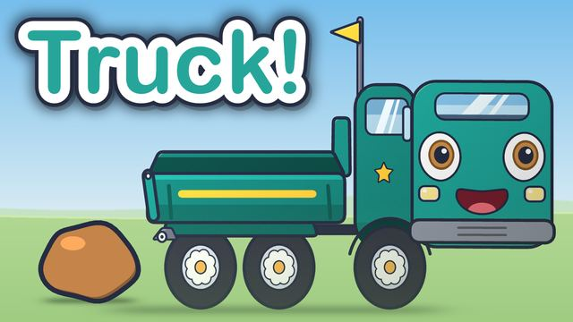
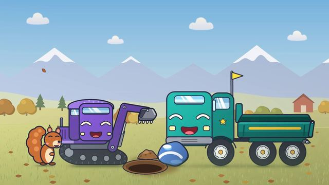
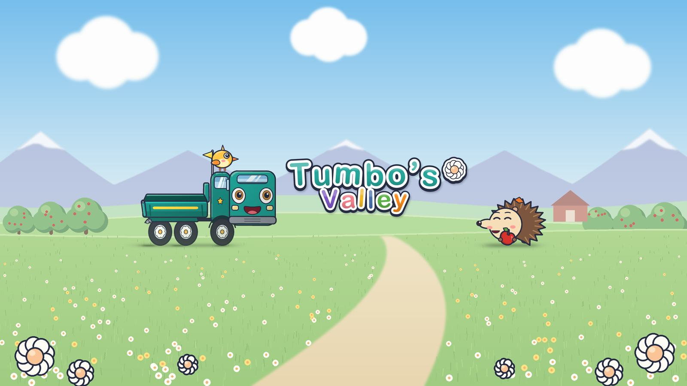
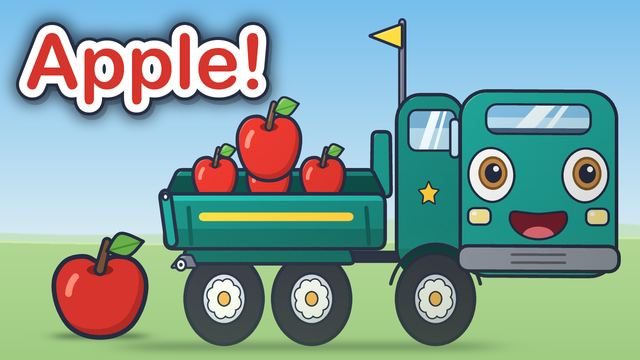
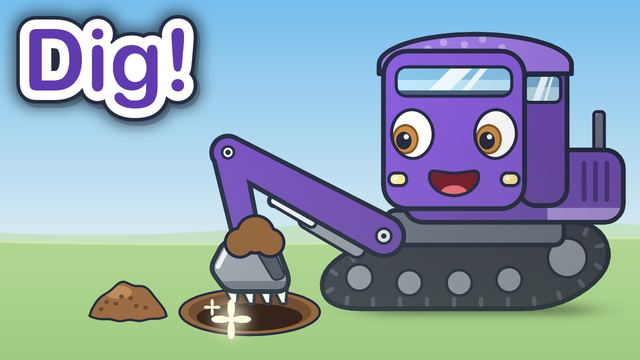
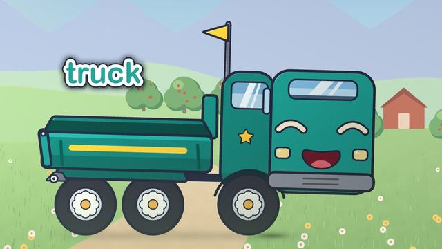
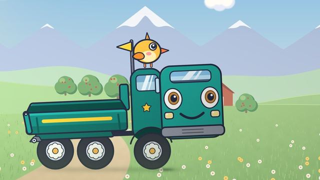
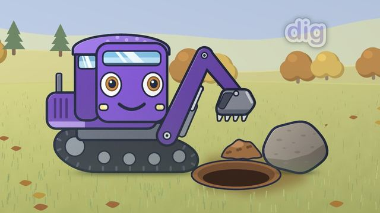

Episode 1
Tumbo's Small Stone
Words: truck stone
 For ages 2 to 3, and the grown-ups beside them
For ages 2 to 3, and the grown-ups beside them
Olel Studio makes calm, original animated shows for very young children. Friendly vehicles, a few simple words, and time to answer. Made to be watched together, on the sofa, with someone you love.

Tumbo is a warm teal truck who lives in a quiet flower valley. A little orange bird rides on his roof, and together with their friends they help the animals of the valley with small, everyday jobs.
Each episode is one small problem and one kind solution, with two easy words to say together.


Episode 1
Words: truck stone

Episode 2
Words: apple bring

Episode 3
Words: dig hole
We start with research: what is known about how very young children watch, look and listen. Then we design every episode around it, slowly and carefully.
A truck looks like a truck and an excavator digs like an excavator, so what your child sees on screen matches what they see outside.
Clear eyes and warm smiles that are easy to read, even for the smallest viewers.
Soft colours, a gentle pace, and only a few things on screen at a time.
About two minutes each. Enough for one small story, and easy to stop after.
Tumbo asks, then waits. The pause gives your child time to say the word too.



Our shows are made for children aged 2 to 3, watching with a grown-up. A few small things help:
Sit with your child when you can. Point, smile, and talk about what you see.
When Tumbo waits, say the word with your child. Any answer is fine, and so is none.
There is no need to finish. When your child looks away or wants to play, that is a good moment to stop.
We suggest watching earlier in the day, not just before sleep.
Ages 2 to 3. That is who we make our shows for. If a younger child is watching too, sit close and keep it short.
Our shows are made with AI-assisted tools. The narration voices are AI-generated.
The characters, stories and the valley are our own originals.